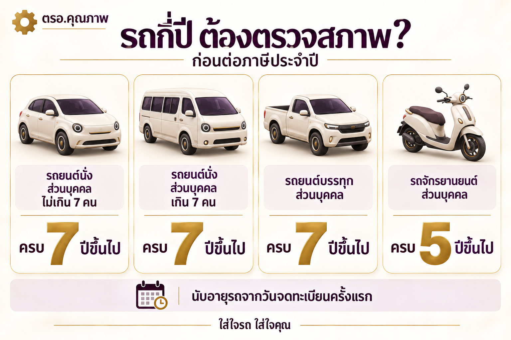
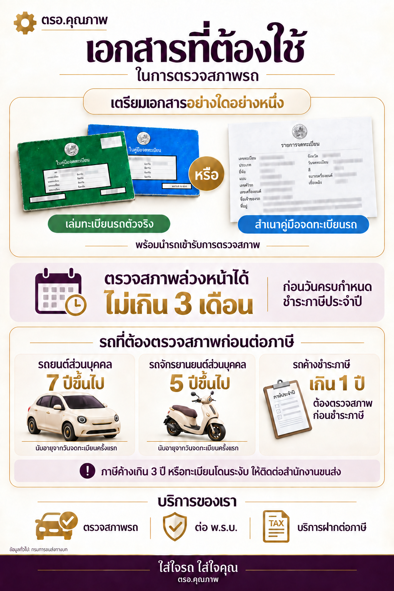

ก่อนต่อภาษีประจำปี
รถกี่ปีต้องตรวจสภาพ
รถยนต์ครบ 7 ปี และรถจักรยานยนต์ครบ 5 ปี ต้องตรวจสภาพก่อนต่อภาษี

ดูรูปขนาดเต็มยินดีให้บริการ
ตรอ. ย่อมาจาก “สถานตรวจสภาพรถเอกชน” นำรถยนต์และรถจักรยานยนต์มาตรวจสภาพได้ใกล้บ้าน ไม่ต้องไปสำนักงานขนส่ง ผลตรวจใช้ต่อภาษีได้ตามกฎหมาย และช่วยให้มั่นใจว่ารถปลอดภัย พร้อมใช้งานบนท้องถนน
ตรวจอะไรบ้าง: ระบบเบรก · ระบบไฟ · ศูนย์ล้อ · ระบบบังคับเลี้ยว · แตร · ระดับเสียง · ไอเสีย
รถยนต์และรถจักรยานยนต์
ประกันภัยรถยนต์ประเภท 1, 2, 3
ค่าบริการ 100 บาท / คัน
โอน ย้าย เปลี่ยนสี เปลี่ยนเครื่องยนต์ ฯลฯ
ยินดีให้คำปรึกษาด้านงานทะเบียนค่ะ
ทุกขั้นตอนชัดเจน ตั้งแต่นำรถเข้ามาจนได้รับผลตรวจ พร้อมคำแนะนำจากเจ้าหน้าที่
นำรถและเล่มทะเบียนเข้ารับบริการที่ศูนย์ตรวจสภาพ
ตรวจตามรายการที่เหมาะกับประเภทรถและการเข้ารับบริการ
รับผลตรวจที่เข้าใจง่าย พร้อมคำแนะนำเฉพาะรถของคุณ
รถค้างภาษีเกิน 1 ปี ต้องผ่านการตรวจสภาพก่อนชำระภาษีประจำปี
ก่อนต่อภาษีประจำปี
รถยนต์ครบ 7 ปี และรถจักรยานยนต์ครบ 5 ปี ต้องตรวจสภาพก่อนต่อภาษี

ดูรูปขนาดเต็มเตรียมตัวก่อนมา
เตรียมเล่มทะเบียนรถตัวจริงหรือสำเนา พร้อมนำรถเข้ารับการตรวจ

ดูรูปขนาดเต็มเตรียมเล่มทะเบียนรถตัวจริงหรือสำเนาคู่มือจดทะเบียนรถ แล้วนำรถเข้ามาตรวจได้เลย ดูรูปเอกสารที่ต้องใช้
ระยะเวลาขึ้นอยู่กับประเภทรถ สภาพรถ และจำนวนรถที่เข้ารับบริการ สามารถสอบถามเจ้าหน้าที่เมื่อมาถึงได้ครับ
เราจะอธิบายจุดที่ควรแก้ไขอย่างชัดเจน เพื่อให้คุณนำรถไปดูแลและกลับมาตรวจซ้ำได้อย่างมั่นใจ
สะดวกสาขาไหน ติดต่อสาขาใกล้บ้านได้เลยค่ะ
จันทร์–เสาร์ 08:00–17:00 น.
ปิดทุกวันอาทิตย์
นอกเวลาทำการ กรุณาโทรสอบถาม
ขอใช้ตำแหน่งเมื่อคุณกดค้นหาเท่านั้น คำนวณในเครื่องโดยไม่บันทึกตำแหน่ง
ตรงข้ามวัดเติมรัก ต.บางคูรัด
02-1029615โทรเลย เปิดแผนที่สาขาเราดูแลการตรวจสภาพรถและต่อภาษีให้ลูกค้าในนนทบุรีและนครปฐมทุกวัน ด้วยสาขาใกล้บ้านและบริการที่รวดเร็ว
ผู้เข้าชมเว็บไซต์